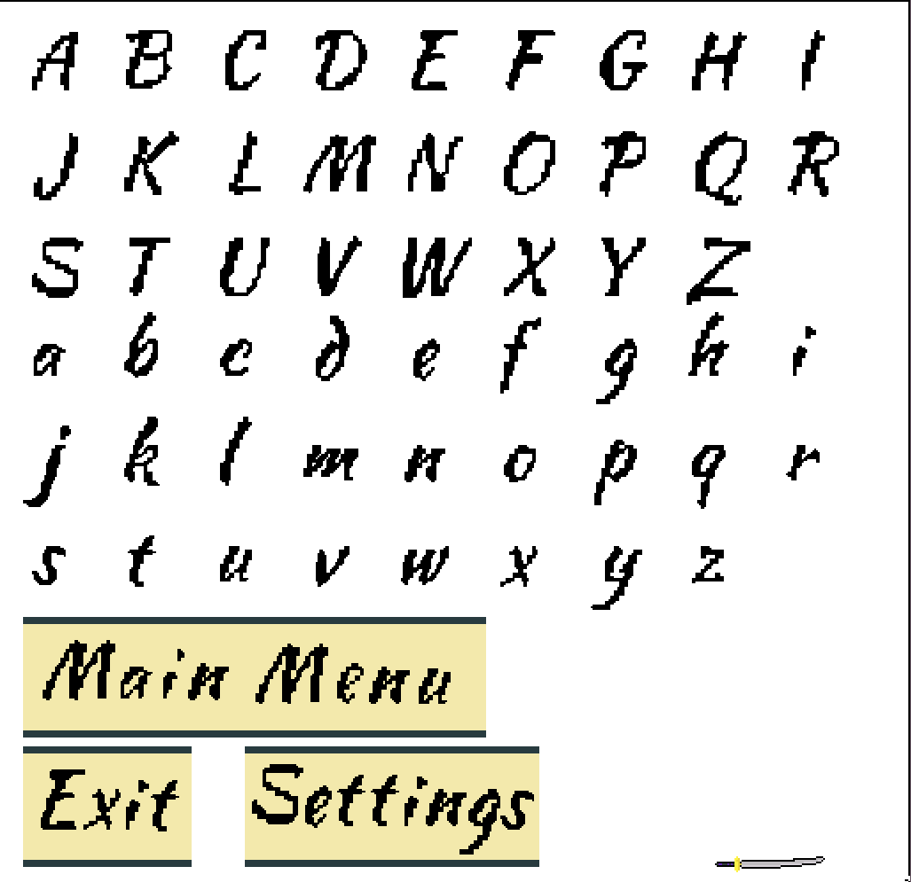

Weekly PPJ Entries for Ricochet Ronin
Met with team, and established connections through discord. (20 min).
Reviewed documents teammates had worked on, and got caught up from missing Monday's class and
Tuesday's meeting. ~ 1 hour
Reviewed one page story board, and began brainstorming narrative ideas/designs. 30 minutes
Met with team on Friday, got fully caught up and did final review of all our resources (1.5 hours)
Continued development of narrative pieces, and storylines for the game (40 min)
I am really enjoying our team's dynamic, and even though we all need to get used to working together,
it seems like it will be an enjoyable product.
It seems like Douglas our effective team leader is really involved and interested in working on this
project.
I personally don't have any negatives from this week of work. We are settling into our positions still.
Concrete storyboarding/screenwriting for some of our narrative structure. Establish more concrete pieces of our settings and characters.
TOTAL : ~ 4 hours counting group wide meetings
Narrative Timeline setup - ½ hour
Narrative Beat Sheet - ½ hour
Friday and Tuesday Meetings - 3 hours
Design Meeting - 1 hour
Artifact Design and Moodboard - 1 hour
Artifact Worldbuilding Document - 2 hours
Mechanics Narrative Document - 1 hour
Scrum Presentation - 1 ½ hours
SELL 01 - 1 hour
Total Hours Worked 10 ½ hours
Snippet from Artifacts’ Lore:
“While he rested, their elements rose from the Omnijin and struck him down. Over the years, within
the realm of men, the artifact saw many different owners. Powerful influential people tried to tap
into its power, some successfully, others not. Over time, the stones that powered it (the ones
containing the jins’ powers) got separated from the Omnijin, ending up in different hands at
different times. If one were to reunite them, and wield the Omnijin proficiently, they may become
near unstoppable.”
Snippet from Mechanics Lore:
“Using Yadomejustu, the ronin swings his broken sword in a flash. A silver arc can be seen following
his arm, as he uses the remaining pieces of his blade to knock projectiles back from where they
came. Over years of training in his ability to stop projectiles, by adding his own skill and
knowledge of martial arts, he can turn simple projectile stopping into projectile redirecting. “
Narrative wise we were able to flesh a good amount about our world out this week, and came up with
some very interesting ideas.
Personally I am happy with some of the ideas I’ve been able to bring to the table Narratively and
thematically, and would love to see them in the full game.
In general, it seems like everyone is getting a good amount of work done personally, and is willing
to contribute to the team.
We still lack artists in general, and going forward we are gonna feel that more and more as we need
more assets for the game.
Dialogue is still kind of questionable, and we don’t know how narrative driven the game will
actually end up being.
Sometimes meetings can feel a little one sided, would like some more participation in general from
people.
Design and more fleshing out of the artifact. Where it has been and how it got to where it is.
Continue managing scrum and creating scrum presentations.
Working on more worldbuilding for the enemy clan and enemy types that are within the game.
Wherever else I can fill in as needed.
Narrative explanation for enemy types - 1 ½ hour
General Team Meetings - 1 ½ hours
SCRUM Presentation 45 min
Design for Omnijin physical art on paper - 30 min
Moodboard for enemy types - 50 min
Total Hours Worked: 5 hours
Snippet from enemy type lore:
Scorned by their leader, reflector type enemies stay on the front lines, the closest possible to
danger. Whether they disrespected the clan, their leader, or themselves, they now pay the price by
putting themselves on the line constantly to protect the rest of the clan. Most of them don't do it
willingly, but the looming threat of violence towards those they may care about most is enough to
make them hold their shields.
It seems like the development side of our team is working really well to implement parts of the game
where needed.
I enjoy the direction our art is going, and think our narrative has a strong background
We are falling more into the proper scrum motions
We still lack artists in general, and going forward I am going to need to transition more into design
even though I lack a lot of the required skills
With everything else going on this week at Drexel, I found it really hard to devote time to this
class and our project.
Meetings still feel a little one sided, would like a little more interaction.
Transition into more of a design role, working on environments and more details for the artifact
Continue managing scrum and creating scrum presentations
Wherever else I can fill in as needed.
Met with team twice for weekly scrum: 1 ½ hours
Met with design team to figure out needed items: 1 hour
Designed health bar for game usage: 1 hour
Translated font into pixel art style, created basic menu buttons: 2 hours
Spread survey for friends and related to take: 30 min
Total Work 6 hours
Image of pixel text/buttons:

Our playtest build is in a much better place, with more interesting effects and better
implementation of abilities
We will hopefully receive a good amount of responses from out surveying, and be able to implement
them.
Our art design is finally getting started in larger portions, and we have more people working on it
each week.
There are some things about the game engine that feel like they need to be ironed out a bit.
Personally I am not the best artist, so I am slightly worried about my ability going forward not
being good enough, but it is something I can practice on and hopefully improve
Polish out the menu items and UI items for the game, begin design on Artifact Sprite
Met with team on Tuesday/Friday for scrum activity: 2hrs
Research tilesets and making pixel art tiles: 4 hours
Created tiling for background, side walls, floor, platforms, ceilings, and window decorations : 4
hours
Created Scrum presentation: 45 minutes
Total Work 10:45 hours
We got started making concrete assets for our level design, I think they are coming together well,
and am proud of my work.
While I was able to make the tiles, I needed some help actually getting the color right and Nicole
stepped up and helped a lot with recoloring things to make them less intrusive on gameplay.
I think we have a better idea of what level design will need and what we'll need in terms of art.
It's difficult since no one has experience, but we are working through it well I think.
This week was a little stressful, as it feels like we are rapidly approaching deadlines, but need to finish a good amount of stuff. It's been hard making some of the assets we need, as none of us really have good software and hardware to make good art assets. It's a learning process for us all.
Next week I plan on polishing some of the visual assets we already have, as well as making new ones
to add more variety and fill some of our empty space.
At this point, we need to look into polishing and finishing what we do have, instead of making new
stuff, so moving towards finishing and finalizing art assets.
Weekly group meetings: 2 hours
Level Design onboarding: 2 hours
Began mapping out level in terms of experiences wanted: 3 hours
Got used to using tile maps in unity: 1 hour
Distributed play test: 30 min
Total Time 8.5 hours
We got a good amount of information from Professor Diefenbach, and are looking forward to trying to
implement a lot of his information in our level and game design.
It seems like our project is reaching a closer to finished state, which makes me feel better overall
We are getting good information from our playtests on what to improve.
There are definitely some glaring issues with our physics engine, and we likely still need art
assets.
We won't be able to fully implement a lot of what we originally wanted to which is fine but always a
little sad
Next week I plan on fully implementing and testing my level designs into engine and putting it together.